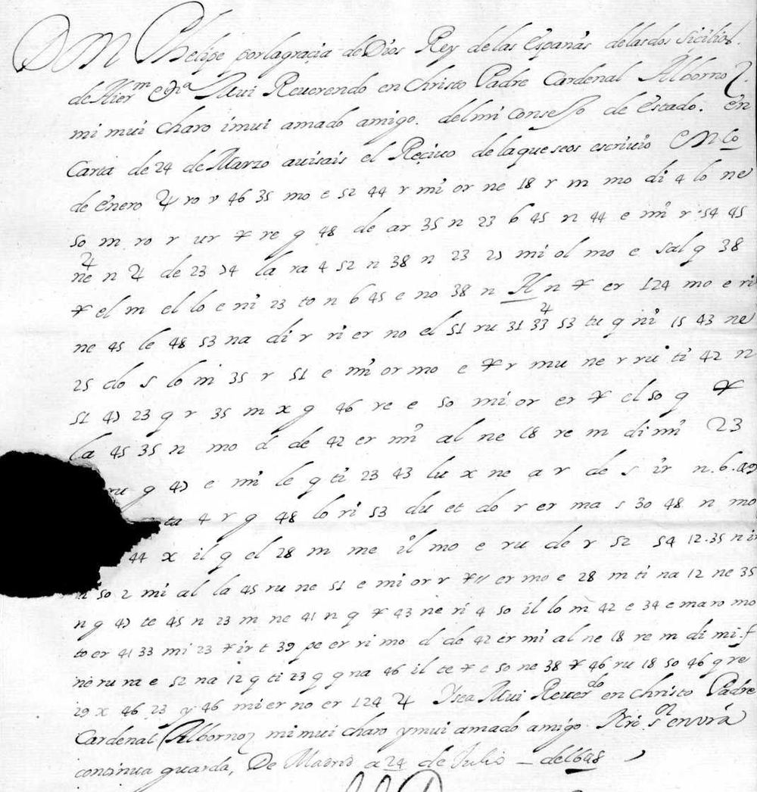

Artikel · Spanien och Heliga stolen, 1600-talet
Rom 1648: ”under inga omständigheter”, Filip IV vill behålla sin nuntie, den blivande Clemens IX
År 1648, det westfaliska fredsslutets år, byter påven Innocentius X ut sina nuntier vid de katolska hoven. I Madrid vill Filip IV behålla sin: Giulio Rospigliosi, ärkebiskop av Tarsus, nuntie sedan 1644. Han ger sin ambassadör i Rom, kardinal Gil de Albornoz, i uppdrag att utverka detta hos påven, och han skriver det till honom i chiffer, två gånger, i två exemplar av samma brev. Ingen hade läst dem. Nitton år senare blir Rospigliosi påve.
”… que no desistáis por ningún caso.”
”… och att ni under inga omständigheter avstår därifrån”: Filip IV till kardinal Albornoz, Madrid, 24 juli 1648 (chiffrerat avsnitt).
Vad som är nytt, vad som var känt
Känt. Rospigliosi var nuntie i Spanien 1644–1653, därefter statssekreterare och påve (Clemens IX, 1667–1669).[3] Albornoz romerska uppdrag har studerats av X. Arriazu García (avhandling, Barcelona, 2024), som citerar andra chiffrerade brev i Osunasamlingen, men inte detta.[5] Registerposten i PARES sammanfattar ärendet: att nuntien ska fortsätta i sitt ämbete. Daniel Bourdeau räknar dessa brev till de olösta handlingarna (katalog nr 747).[2]
Vad vi bidrar med, så vitt vi vet. (1) Den första publicerade dechiffreringen av brevet: 359 chiffergrupper, 353 lästa (98,3 %), varav omkring fem sannolika; sex förblir olösta. (2) Nyckeln, hämtad ur en annan handling i samma samling, chiffrerad för Albornoz 1649 tillsammans med sin avskrift i klartext, och validerad på en del av den handlingen som hållits utanför. (3) De skäl som kungen i hemlighet anför för att behålla nuntien.
En nuntie som kungen vill behålla
Nuntien företräder påven hos kungen; han dömer också i rikets kyrkliga mål och förhandlar med hovet. En nuntie som är väl sedd i Madrid är en tillgång. I januari 1648 har Filip IV redan bett Albornoz att utverka hos Innocentius X att ärkebiskopen av Tarsus får fortsätta sin tjänstgöring. Den 24 mars svarar Albornoz att han har gjort framställningar; påven har anfört sina skäl. Den 24 juli insisterar kungen (här i översättning):
”Då denne man är högst värd ynnest för den omsorg han ägnar sitt ämbete och den representation han utövar, och då det för tjänstens intressen, hans furstes och min, inte kan finnas något lämpligare redskap, ålägger jag er åter att fortsätta och fördubbla era framställningar hos Hans Helighet om att han ska behållas, i enlighet med de första befallningarna, och att under inga omständigheter avstå därifrån.”

Formuleringen ”hans furstes och min” säger allt: nuntien tjänar två herrar, och kungen håller fast vid den som också tjänar hans egen. Rospigliosi stannar mycket riktigt i Madrid till 1653. Albornoz lämnar däremot Rom 1649 och dör i december samma år.[4] Kungen som ”under inga omständigheter” ville släppa denne nuntie kunde inte veta att han insisterade för en blivande påve; vald 1667 skulle Clemens IX verka för fred mellan Frankrike och Spanien.[3]
Chiffret
- Förklädda stavelser: konsonanten utbytt, vokalen behållen (mo = co, ne = de, ra = sa, la = pa, ti = mi).
- Tal i serier om fem: 35–39 = la le li lo lu; 45–49 = ra…ru; 50–54 = ta…tu.
- Enstaka bokstäver (2 = n, n = s, m = r) och några förkortningstecken (✗ = que, sal = Su Santidad).
Hur vi läste det
- Fel chiffer uteslutet: den nyckel som rekonstruerats ur samma samlings kungliga brev från 1644–1645 passar inte brevet från 1648, som är skrivet i ett annat system.
- Nyckelhandlingen: samma samling bevarar ett kapitel ur ett brev från Luis de Haro, avsett att sändas till kardinal Albornoz (1649), i klartext och i chiffer. Frasen ”dentro de Cataluña”, chiffrerad två gånger på samma sätt, öppnade upplinjeringen.
- En undanhållen validering: nyckeln byggd enbart på rad 1–12 i denna handling och låst med ett SHA-256-fingeravtryck; mekaniskt avkodade återfinner rad 13–23 (394 tecken) 0,859 av bokstäverna i den samtida klartexten, mot 0,476 vid 99:e percentilen för 200 kontrollnycklar.
- Läsningen av de två exemplaren, kontrollerade grupp för grupp mot varandra.
Vad som är osäkert
- Sex olösta grupper, däribland fyra kodtecken som bara förekommer här (‹74›, ‹A›, ‹124› två gånger, ‹✗11›); den allmänna innebörden beror inte på dem.
- En ungefärlig räkning av de sannolika (omkring fem): de säkra är minst 348 av 359 (96,9 %).
- Ett kort brev, en enda handling: samlingens övriga brev från 1648 är inte digitaliserade.
- Tidigare kännedom. Kontrollerad den 28 oktober och den 14 november 2026: registerposten i PARES, Arriazu Garcías avhandling, Daniel Bourdeaus GitHub-förråd (målet albornoz1648, vår läsning), sökning på nätet.
Referenser
Toledo, Archivo Histórico de la Nobleza, OSUNA, CT.2, D.32 (Filip IV till kardinal Albornoz, Madrid, 24 juli 1648, två exemplar); nyckelhandling OSUNA, CT.11, D.1 (1649). PARES ↗ · Nyckelhandling ↗
Daniel Bourdeau, katalogen cyphersolver, nr 747, och målet albornoz1648 ↗ (95-procentsregeln).
”Clemens IX”, Wikipedia (sv), läst den 14 november 2026. Wikipedia ↗
”Gil de Albornoz y Espinosa”, Wikipedia (en), läst den 14 november 2026. Wikipedia ↗
X. Arriazu García, avhandling om Gil de Albornoz och hans uppdrag i Italien (1630–1649), Universitat de Barcelona, 2024. Dipòsit UB ↗
Transkription, nyckel och läsning: Brice Dudout med Claude, oktober 2026; text och översättning i posten ”Albornoz 1648” på sidan Dokument, med krediteringar.